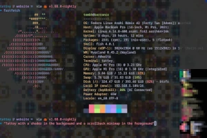

About Me
 Hello, I’m Thomas Buckley-Houston, but you can call me Tom. I am from Wales,
but I’ve been traveling the world full time since 2015.
Hello, I’m Thomas Buckley-Houston, but you can call me Tom. I am from Wales,
but I’ve been traveling the world full time since 2015.
I earn a living writing software, you can see the code I’ve written on
Github. You can sponsor my open
source work on Patreon and
Github.
I have a love of meditation and a degree in Religious Studies. I
wrote a book
and used to regularly podcast about spiritual matters.
Email me on tomnospam@tombh.co.uk.
Follow me on Mastodon and
Bluesky.
Or watch me on Youtube
and livestream on Twitch.
♥
Tattoy

A text-based terminal compositor that amongst many other things, can render
shaders and a second terminal in the background of your actual terminal.
The source is on Github.
Browsh

A text-based browser for the modern web, it can render everything from CSS3
to WebAssembly apps. It's primarily for those that suffer slow and/or expensive Internet.
It's been on the front page of Hacker News 4 times:
May 2016,
Jan 2018,
July 2018 and
May 2022.
The source is on Github.
The Sponge Relay

When I started travelling in 2015, I took a sponge from my apartment. I then exchanged that
sponge with the host of my next destination. I've repeated this seemingly odd ritual in almost
every country I've since visited.
See the latest archive of all the exchanges.
BBC Radio Bristol

From 2013 to 2015 I was a regular contributor to BBC Radio Bristol's Thought For The Day.
They wanted me to be their Buddhist voice, but I'm not strictly a Buddhist, so we agreed that
I'd be their "Buddhist Meditator and Psychotherapist". I posted the texts of each one, which
you can read here.
Walking Wales

In the Autumn of 2014 I walked solo 270km from North Wales to my flat in Bristol. Somewhat of a pilgrimage I managed to
document the adventure on video, which you can now watch on Youtube.

Possibly the most complex software I’ve ever written. This is a Heroku-inspired service that
allows you to host and scale your own 12 Factor Apps. It got on
the front page of Hacker News.
And the source is on Github.
TEDx Talk

I gave a short talk at TEDx Bath about vulnerability. It used pictures of cats with their heads sticking through pieces of bread, people laughed.
You can watch it on Youtube.
wNOP — Compiz-enabled Linux

I was, for a while, actively involved in the Puppy Linux community during which time
I developed a popular derivative called wNOP that
automatically configured the OpenGL Window Manager, Compiz-Fusion, ‘out-of-the-box’. So I am told, tens of thousands of copies
have been downloaded.